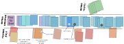

| tags:[ games card games ]
Eleusis (card game)
A card game by Robert Abbott ↗.
Overview
Each round one player is God (dealer) and other players are scientists. God makes up a rule and scientists are trying to get rid of their cards by playing them accodring to the rule.
The following picture shows one possible layout of cards at the end of one round.

Example scoring: (Read the rules and scoring first.) Assume there were 5 players with hands of size (13, Prophet’s 11, 2, 0, and God which doesn’t have a hand), the scoring would go like this: First players gets no points. Prophet (second player) begun after 21-st card. Prophet will get 19 points (11 correct + 2* 4 wrong cards) + 2 points because of his hand size (13-11). Third player gets 13-2=11 points. Fourth player gets 13-0=13 for hand and +4 because he has no cards. God will get minimum among 2* 21 and best player’s score (second player’s 21).
Rules
Game setup
- You need (at least) two sets of standard 52 playing card decks,
- 4 :D, 5 :D, 6 :), 7 :|, 8 :( players, (in 7+ players there is no point in counting points)
- big table,
- decide who will be God in the first round.
Round setup
- God writes down a secret rule which depends only on the correctly played cards.
- Each scientist is delt 14 cards.
- God may give a hint about the rule.
- God plays the first card which is in accordance to the rule.
- Choose a player to start.
Round
During the round scientists take turns doing the following.
- Play 1 to 4 cards in order, or declare ’no play’ and show your hand to everyone (God will check).
- If there is no Prophet, 2 more scientists are still playing, and he has not been Prophet this round, then he may declare himself Prophet.
Prophet takes all God’s responsibilities but doesn’t know the rule. He also pauses God’s counter and starts a new counter which will force ‘sudden death’ after 30 cards – put dark tokens on card where Prophet started, and on every 10-th played card. Prophet retains his cards but does not play them.
God watches the scientists and deals cards as punishment. He has a counter which causes ‘sudden death’ after 40 cards – puts a light token on every 10-th played card.
- If any card of scientist’s play is wrong then deal him twice the number of cards he just played.
- Check ’no play’ player’s hand:
- Correct - discard his hand, deal new hand with 4 less cards.
- Incorrect - play the correct card from his hand, deal him 5 cards.
- Watch the Prophet and if there is any inconsistency then he becomes Scientist again, he picks up his hand, deal him 5 cards, remove Prophet’s counter tokens and add God’s tokens which are missing. The scientist who made mistake this turn is not penalized.
In sudden death every mistake eliminates the player – he sits back and does not play, he retains his hand after death until scoring.
Suggestions
The following notes are not stated explicitly in sources.
- If deck runs out of cards end the game immediately. If someone is not given cards because the deck ran out, count his hand size as if he drew all cards (for scoring). Deck may run out of cards on hard rules, or if you play with more people. This is good for keeping the maximal score bounded, and punish rules which are too restrictive and make players throw their hands too often. If you are frustrated by running out, then play the game with more than 2 decks, or add another deck just after you run out of cards.
- If God messes up, let him fix the sequence, and give penalty of 10 points.
- Sudden death applies to the prophet if he makes a mistake, if so, the player’s mistake is not penalized at all, i.e., he does not die.
Variants to the rules.
- You may do the ‘declare Prophet’ differently: A scientist may declare he wants to be Prophet, everyone in order from that scientist either says he wants it instead or not. The last scientist who wants becomes the Prophet.
End and Scoring
Round ends when a scientist has no cards or all scientist have been eliminated (or when the deck runs out of cards). Players want to achieve the maximum number of points.
- Scientist (or prophet) gets
- 1 point for each card less he has compared to the maximum hand size,
- 4 points if he has no cards on hand.
- True Prophet gets points for cards played after he became Prophet
- 1 point for each correctly played card,
- 2 points for each incorrectly played card.
- No points for correctly discarded hands.
- God gets minimum of
- maximum scientist’s (or Prophet’s) score,
- or twice the number of cards played before the true Prophet begun (including last Prophet’s play).
- 10 points to each player who had not been God if the game ended early.
Examples of tried rules
List of rules with scores of players follows. Rules are sorted by God’s score. Results may vary wildly depending on the players’ knowledge and experience with this game.
- Four cards below 10 and one cards above J (picture cards) pattern. (52, 52, 5, 1, 0)
- Runs of red/black cards with lengths equal to Fibonacci sequence. (48, 48, 10, 3, 0)
- Sequences of red/black alternate with lengths of 1, 2, 3, and so on. (30, 30, 19, 10, 0)
- Consecutive cards cannot have the same suite. (35, 24, 16, 6, 0)
- Only even red or odd black. (25, 25, 19, 9, 0)
- Red and black alternate, A can be played anytime. (22, 22, 12, 4)
- Difference of two consecutive cards is at most 1, with overflow. (20, 20, 15, 5)
- Sum of consecutive cards must be less than 16. (18, 18, 11, 5, 0)
- Red cards form increasing (by 1), black decreasing (by 1), sequence, with overflow. (18, 18, 13, 4)
- There are no triples of increasing/decreasing consecutive cards, and difference of consecutive cards is at most 3. (16, 16, 8, 1 ,0)
- Play black 2-8 or red 10-K. (14, 14, 4, 0)
- After red odd card the next card must have a different color. (13, 13, 1, 1, 0)
- Difference of two consecutive cards in odd positions is at most 1, the same rule for even positions, with overflow. (11, 11, 4, 1, 0)
- Next card cannot be in the range of two previous cards. (10, 10, 4, 2, 0)
- Only every third card can be J, Q, K, or A. (9, 9, 7, 0)
- Only play black primes or red powers of 2. (8, 8, 4, 0)
- Different color of higher value, same color with lower value, at most three cards of the same color in row. (7, 7, 1, 0, 0)
- Same color, or the same number of symbols in the greek numerical notation. (6, 6, 5, 2, 0)
- Repeating odd, odd, even pattern. (5, 5, 2, 1, 0)
- Only every second card can contain a circle in its symbol, i.e., 6, 8, 9, 0, 10 or Q. (5, 5, 0, 0)
- Sequence of small black, big red, small red, big black, anything, where small is 1-7, big is 7-K. (5, 5, 4, 2, 0)